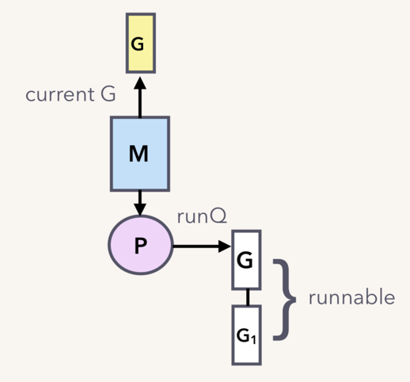
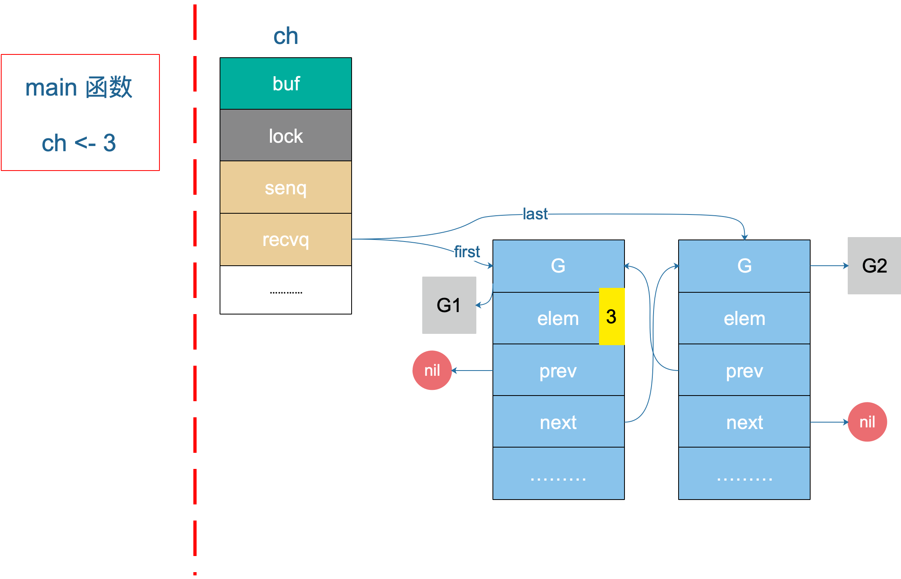

源码分析
#
发送操作最终转化为 chansend 函数，直接上源码，同样大部分都注释了，可以看懂主流程：
1
2
3
4
5
6
7
8
9
10
11
12
13
14
15
16
17
18
19
20
21
22
23
24
25
26
27
28
29
30
31
32
33
34
35
36
37
38
39
40
41
42
43
44
45
46
47
48
49
50
51
52
53
54
55
56
57
58
59
60
61
62
63
64
65
66
67
68
69
70
71
72
73
74
75
76
77
78
79
80
81
82
83
84
85
86
87
88
89
90
91
92
93
94
95
96
97
98
99
100
101
102
103
104
105
106
107
108
109
110
111
112
113
114
115
116
117
118
119
120
121
122
|
// 位于 src/runtime/chan.go
func chansend(c *hchan, ep unsafe.Pointer, block bool, callerpc uintptr) bool {
// 如果 channel 是 nil
if c == nil {
// 不能阻塞，直接返回 false，表示未发送成功
if !block {
return false
}
// 当前 goroutine 被挂起
gopark(nil, nil, "chan send (nil chan)", traceEvGoStop, 2)
throw("unreachable")
}
// 省略 debug 相关……
// 对于不阻塞的 send，快速检测失败场景
//
// 如果 channel 未关闭且 channel 没有多余的缓冲空间。这可能是：
// 1. channel 是非缓冲型的，且等待接收队列里没有 goroutine
// 2. channel 是缓冲型的，但循环数组已经装满了元素
if !block && c.closed == 0 && ((c.dataqsiz == 0 && c.recvq.first == nil) ||
(c.dataqsiz > 0 && c.qcount == c.dataqsiz)) {
return false
}
var t0 int64
if blockprofilerate > 0 {
t0 = cputicks()
}
// 锁住 channel，并发安全
lock(&c.lock)
// 如果 channel 关闭了
if c.closed != 0 {
// 解锁
unlock(&c.lock)
// 直接 panic
panic(plainError("send on closed channel"))
}
// 如果接收队列里有 goroutine，直接将要发送的数据拷贝到接收 goroutine
if sg := c.recvq.dequeue(); sg != nil {
send(c, sg, ep, func() { unlock(&c.lock) }, 3)
return true
}
// 对于缓冲型的 channel，如果还有缓冲空间
if c.qcount < c.dataqsiz {
// qp 指向 buf 的 sendx 位置
qp := chanbuf(c, c.sendx)
// ……
// 将数据从 ep 处拷贝到 qp
typedmemmove(c.elemtype, qp, ep)
// 发送游标值加 1
c.sendx++
// 如果发送游标值等于容量值，游标值归 0
if c.sendx == c.dataqsiz {
c.sendx = 0
}
// 缓冲区的元素数量加一
c.qcount++
// 解锁
unlock(&c.lock)
return true
}
// 如果不需要阻塞，则直接返回错误
if !block {
unlock(&c.lock)
return false
}
// channel 满了，发送方会被阻塞。接下来会构造一个 sudog
// 获取当前 goroutine 的指针
gp := getg()
mysg := acquireSudog()
mysg.releasetime = 0
if t0 != 0 {
mysg.releasetime = -1
}
mysg.elem = ep
mysg.waitlink = nil
mysg.g = gp
mysg.selectdone = nil
mysg.c = c
gp.waiting = mysg
gp.param = nil
// 当前 goroutine 进入发送等待队列
c.sendq.enqueue(mysg)
// 当前 goroutine 被挂起
goparkunlock(&c.lock, "chan send", traceEvGoBlockSend, 3)
// 从这里开始被唤醒了（channel 有机会可以发送了）
if mysg != gp.waiting {
throw("G waiting list is corrupted")
}
gp.waiting = nil
if gp.param == nil {
if c.closed == 0 {
throw("chansend: spurious wakeup")
}
// 被唤醒后，channel 关闭了。坑爹啊，panic
panic(plainError("send on closed channel"))
}
gp.param = nil
if mysg.releasetime > 0 {
blockevent(mysg.releasetime-t0, 2)
}
// 去掉 mysg 上绑定的 channel
mysg.c = nil
releaseSudog(mysg)
return true
}
|
上面的代码注释地比较详细了，我们来详细看看。
对于这一点，runtime 源码里注释了很多。这一条判断语句是为了在不阻塞发送的场景下快速检测到发送失败，好快速返回。
1
2
3
|
if !block && c.closed == 0 && ((c.dataqsiz == 0 && c.recvq.first == nil) || (c.dataqsiz > 0 && c.qcount == c.dataqsiz)) {
return false
}
|
注释里主要讲为什么这一块可以不加锁，我详细解释一下。if 条件里先读了两个变量：block 和 c.closed。block 是函数的参数，不会变；c.closed 可能被其他 goroutine 改变，因为没加锁嘛，这是“与”条件前面两个表达式。
最后一项，涉及到三个变量：c.dataqsiz，c.recvq.first，c.qcount。c.dataqsiz == 0 && c.recvq.first == nil 指的是非缓冲型的 channel，并且 recvq 里没有等待接收的 goroutine；c.dataqsiz > 0 && c.qcount == c.dataqsiz 指的是缓冲型的 channel，但循环数组已经满了。这里 c.dataqsiz 实际上也是不会被修改的，在创建的时候就已经确定了。不加锁真正影响地是 c.qcount 和 c.recvq.first。
这一部分的条件就是两个 word-sized read，就是读两个 word 操作：c.closed 和 c.recvq.first（非缓冲型） 或者 c.qcount（缓冲型）。
当我们发现 c.closed == 0 为真，也就是 channel 未被关闭，再去检测第三部分的条件时，观测到 c.recvq.first == nil 或者 c.qcount == c.dataqsiz 时（这里忽略 c.dataqsiz），就断定要将这次发送操作作失败处理，快速返回 false。
这里涉及到两个观测项：channel 未关闭、channel not ready for sending。这两项都会因为没加锁而出现观测前后不一致的情况。例如我先观测到 channel 未被关闭，再观察到 channel not ready for sending，这时我以为能满足这个 if 条件了，但是如果这时 c.closed 变成 1，这时其实就不满足条件了，谁让你不加锁呢！
但是，因为一个 closed channel 不能将 channel 状态从 ‘ready for sending’ 变成 ’not ready for sending’，所以当我观测到 ’not ready for sending’ 时，channel 不是 closed。即使 c.closed == 1，即 channel 是在这两个观测中间被关闭的，那也说明在这两个观测中间，channel 满足两个条件：not closed 和 not ready for sending，这时，我直接返回 false 也是没有问题的。
这部分解释地比较绕，其实这样做的目的就是少获取一次锁，提升性能。
1
2
3
4
5
6
7
8
9
10
11
12
13
14
15
16
17
18
19
20
21
22
23
24
25
26
27
28
29
30
|
// send 函数处理向一个空的 channel 发送操作
// ep 指向被发送的元素，会被直接拷贝到接收的 goroutine
// 之后，接收的 goroutine 会被唤醒
// c 必须是空的（因为等待队列里有 goroutine，肯定是空的）
// c 必须被上锁，发送操作执行完后，会使用 unlockf 函数解锁
// sg 必须已经从等待队列里取出来了
// ep 必须是非空，并且它指向堆或调用者的栈
func send(c *hchan, sg *sudog, ep unsafe.Pointer, unlockf func(), skip int) {
// 省略一些用不到的
// ……
// sg.elem 指向接收到的值存放的位置，如 val <- ch，指的就是 &val
if sg.elem != nil {
// 直接拷贝内存（从发送者到接收者）
sendDirect(c.elemtype, sg, ep)
sg.elem = nil
}
// sudog 上绑定的 goroutine
gp := sg.g
// 解锁
unlockf()
gp.param = unsafe.Pointer(sg)
if sg.releasetime != 0 {
sg.releasetime = cputicks()
}
// 唤醒接收的 goroutine. skip 和打印栈相关，暂时不理会
goready(gp, skip+1)
}
|
继续看 sendDirect 函数：
1
2
3
4
5
6
7
8
9
10
11
12
13
14
15
|
// 向一个非缓冲型的 channel 发送数据、从一个无元素的（非缓冲型或缓冲型但空）的 channel
// 接收数据，都会导致一个 goroutine 直接操作另一个 goroutine 的栈
// 由于 GC 假设对栈的写操作只能发生在 goroutine 正在运行中并且由当前 goroutine 来写
// 所以这里实际上违反了这个假设。可能会造成一些问题，所以需要用到写屏障来规避
func sendDirect(t *_type, sg *sudog, src unsafe.Pointer) {
// src 在当前 goroutine 的栈上，dst 是另一个 goroutine 的栈
// 直接进行内存"搬迁"
// 如果目标地址的栈发生了栈收缩，当我们读出了 sg.elem 后
// 就不能修改真正的 dst 位置的值了
// 因此需要在读和写之前加上一个屏障
dst := sg.elem
typeBitsBulkBarrier(t, uintptr(dst), uintptr(src), t.size)
memmove(dst, src, t.size)
}
|
这里涉及到一个 goroutine 直接写另一个 goroutine 栈的操作，一般而言，不同 goroutine 的栈是各自独有的。而这也违反了 GC 的一些假设。为了不出问题，写的过程中增加了写屏障，保证正确地完成写操作。这样做的好处是减少了一次内存 copy：不用先拷贝到 channel 的 buf，直接由发送者到接收者，没有中间商赚差价，效率得以提高，完美。
然后，解锁、唤醒接收者，等待调度器的光临，接收者也得以重见天日，可以继续执行接收操作之后的代码了。
- 如果
c.qcount < c.dataqsiz，说明缓冲区可用（肯定是缓冲型的 channel）。先通过函数取出待发送元素应该去到的位置：
1
2
3
4
5
6
|
qp := chanbuf(c, c.sendx)
// 返回循环队列里第 i 个元素的地址处
func chanbuf(c *hchan, i uint) unsafe.Pointer {
return add(c.buf, uintptr(i)*uintptr(c.elemsize))
}
|
c.sendx 指向下一个待发送元素在循环数组中的位置，然后调用 typedmemmove 函数将其拷贝到循环数组中。之后 c.sendx 加 1，元素总量加 1 ：c.qcount++，最后，解锁并返回。
-
如果没有命中以上条件的，说明 channel 已经满了。不管这个 channel 是缓冲型的还是非缓冲型的，都要将这个 sender “关起来”（goroutine 被阻塞）。如果 block 为 false，直接解锁，返回 false。
-
最后就是真的需要被阻塞的情况。先构造一个 sudog，将其入队（channel 的 sendq 字段）。然后调用 goparkunlock 将当前 goroutine 挂起，并解锁，等待合适的时机再唤醒。
唤醒之后，从 goparkunlock 下一行代码开始继续往下执行。
这里有一些绑定操作，sudog 通过 g 字段绑定 goroutine，而 goroutine 通过 waiting 绑定 sudog，sudog 还通过 elem 字段绑定待发送元素的地址，以及 c 字段绑定被“坑”在此处的 channel。
所以，待发送的元素地址其实是存储在 sudog 结构体里，也就是当前 goroutine 里。
案例分析
#
好了，看完源码。我们接着来分析例子，代码如下：
1
2
3
4
5
6
7
8
9
10
11
12
13
14
15
16
17
18
19
20
21
|
func goroutineA(a <-chan int) {
val := <- a
fmt.Println("goroutine A received data: ", val)
return
}
func goroutineB(b <-chan int) {
val := <- b
fmt.Println("goroutine B received data: ", val)
return
}
func main() {
ch := make(chan int)
go goroutineA(ch)
go goroutineB(ch)
ch <- 3
time.Sleep(time.Second)
ch1 := make(chan struct{})
}
|
在发送小节里我们说到 G1 和 G2 现在被挂起来了，等待 sender 的解救。在第 17 行，主协程向 ch 发送了一个元素 3，来看下接下来会发生什么。
根据前面源码分析的结果，我们知道，sender 发现 ch 的 recvq 里有 receiver 在等待着接收，就会出队一个 sudog，把 recvq 里 first 指针的 sudo “推举”出来了，并将其加入到 P 的可运行 goroutine 队列中。
然后，sender 把发送元素拷贝到 sudog 的 elem 地址处，最后会调用 goready 将 G1 唤醒，状态变为 runnable。

当调度器光顾 G1 时，将 G1 变成 running 状态，执行 goroutineA 接下来的代码。G 表示其他可能有的 goroutine。
这里其实涉及到一个协程写另一个协程栈的操作。有两个 receiver 在 channel 的一边虎视眈眈地等着，这时 channel 另一边来了一个 sender 准备向 channel 发送数据，为了高效，用不着通过 channel 的 buf “中转”一次，直接从源地址把数据 copy 到目的地址就可以了，效率高啊！

上图是一个示意图，3 会被拷贝到 G1 栈上的某个位置，也就是 val 的地址处，保存在 elem 字段。
参考资料
#
【深入 channel 底层】https://codeburst.io/diving-deep-into-the-golang-channels-549fd4ed21a8
【Kavya在Gopher Con 上关于 channel 的设计，非常好】https://speakerd.s3.amazonaws.com/presentations/10ac0b1d76a6463aa98ad6a9dec917a7/GopherCon_v10.0.pdf